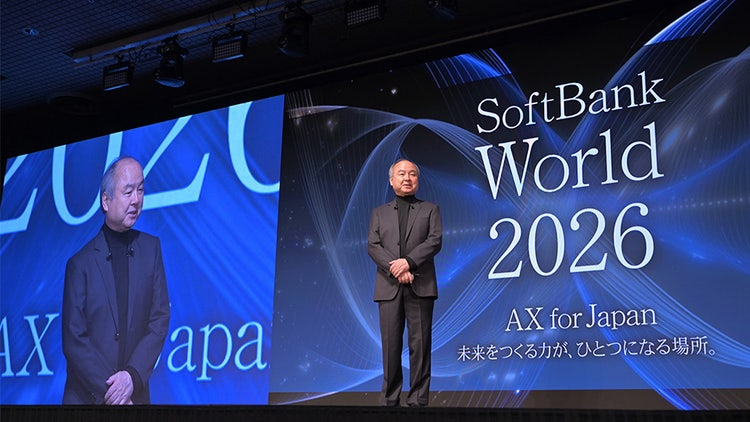

Voices
Masayoshi Son Special Lecture
ASI ECONOMY
Lecture Video Released · SoftBank

ASI (Artificial Superintelligence) refers to AI that surpasses human capabilities in almost every intellectual task. Explore Masayoshi Son’s vision of the ASI Economy and the future of agents, humanoids, power, and computing infrastructure.
- Provided Transcript Coverage
- 0:17–1:05:35
- Structure
- 08 CHAPTERS
- Transcript Segments
- 484 SEGMENTS
CARROT CAVE INSIGHTS
Editor’s Summary — The following summarizes the lecture’s key perspectives and is not a direct quotation.
- Vision is not a declaration that AI matters. It means setting a target year and scale, then working backward to the investments needed today.
- The proliferation of agents and humanoids will reshape not just software demand but also the scale of power and computing infrastructure.
- Revenue projections and infrastructure investments for the ASI economy are not separate figures, but mutually supporting assumptions.
- The success of AI adoption should be measured not by whether AI has been adopted, but by changes in productivity and earnings—by Return on AI.
- Competition is not just between AI and humans, but also between companies that use AI and those that do not.
Sources and Translation Notes
- Speaker: Masayoshi Son · SoftBank World 2026 Special Lecture
- Translation Source: An English translation based on the reviewed Korean edition, translated from the Japanese transcript.
- Coverage: 484 provided transcript segments, from 0:17 through the final remarks beginning at 1:05:35. According to the official YouTube metadata, the video is 1:06:15 long and was uploaded on September 1, 2026.
- Official Video: Original Lecture on YouTube
- Related Official Report: Official SoftBank Report · July 16, 2026 is the publication date of this report, not the video’s upload date.
- Download the Full English Translation (.md) · Download the User-Provided Original Japanese Transcript (.md)
Full English Transcript Translation
Loading the full English transcript translation.
Could not load the translated transcript. Please try again shortly, or use the official video and download links above.